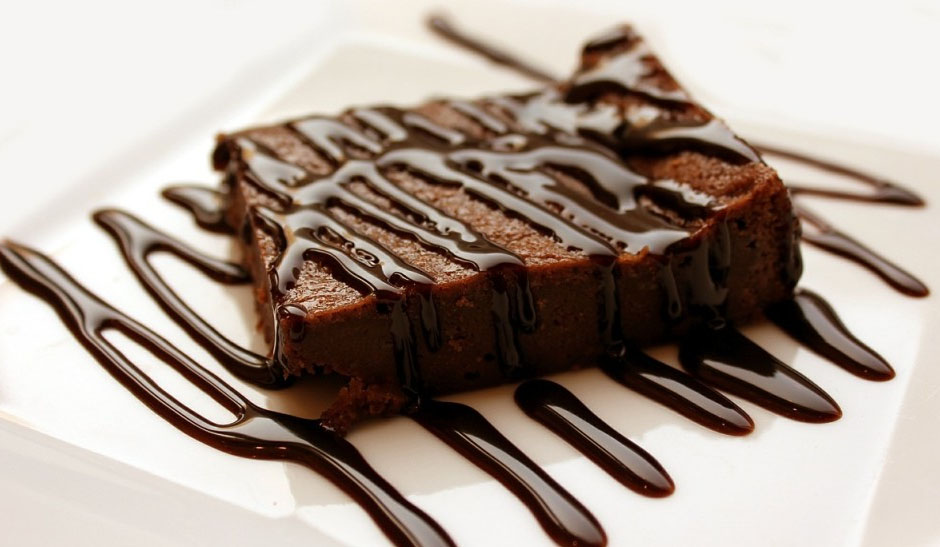
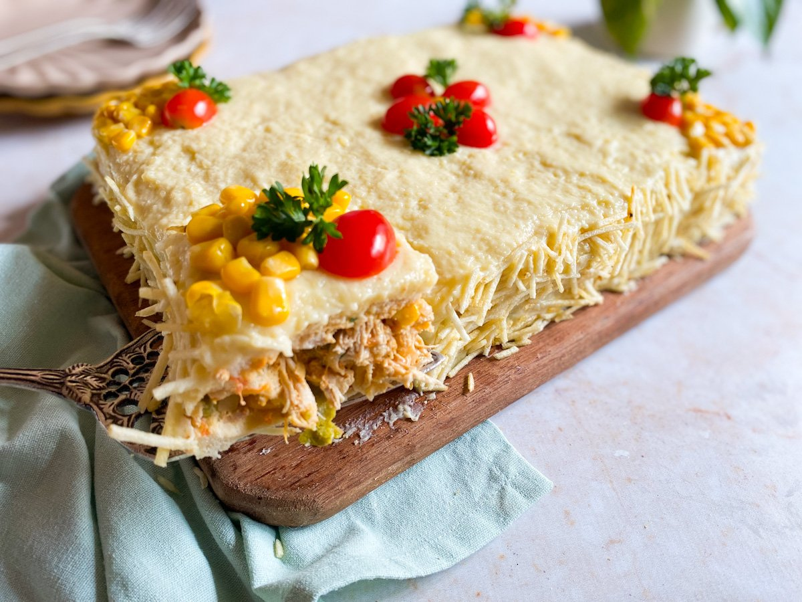

Sobre nós
Aqui, o cheirinho de pão quentinho encontra o calor de um bom papo. Somos uma padaria artesanal onde cada fornada é feita com tempo, cuidado e sabor.
Mais do que vender pães, queremos criar memórias. Seja no café da manhã com a família, no lanche da tarde ou naquele encontro rápido na calçada, nossa padaria é um ponto de encontro para quem aprecia simplicidade, afeto e tradição.
A padaria foi fundada em 2010, pela minha mãe, Dona Teresa. O carro-chefe é o pão de queijo caseiro.
Uma breve demonstração do nosso café veja abaixo:
Nossos produtos
| Categoria | Produto | Descrição breve | Preço | Imagem |
|---|---|---|---|---|
| Pães | Pão de Fermentação Natural | Integral, multigrãos, com nozes | R$ 10,00 |  |
| Doces | Croissant de Manteiga com Chocolate | Massa folhada leve, estilo francês | R$ 9,00 |  |
| Salgados | Pão de Queijo Artesanal | Com queijo da Serra da Canastra | R$ 1,00 |  |
| Doces | Brownie Artesanal | Com pedaços de chocolate belga | R$ 6,50 |  |
| Salgados | Torta Salgada de Frango | Com legumes e requeijão | R$ 8,00 |  |
| Bebidas | Cappuccino Artesanal | Com leite vaporizado e canela | R$ 7,00 |  |
Diferenciais
“ 🍞O pão quentinho que sua manhã merece.”
- 🧑🍳Produção artesanal de verdade
- 📜Receitas de família ou tradicionais
- 🥬Produtos fresquinhos o dia todo
- 🤝Atendimento próximo e acolhedor
Apresentação do site da padaria:
⏰Horarios de funcionamento
| Dias | Horas |
|---|---|
| Segunda-feira | Descanso da equipe |
| Terça-feira á domingo | 6:30 às 19h |
| Feriados | Não abrimos |
Espaço para café no local